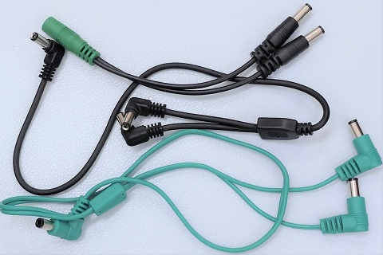
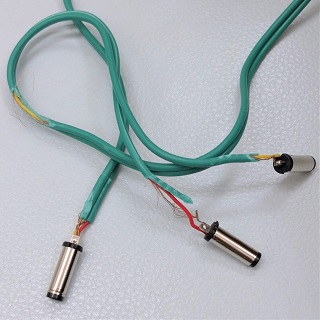
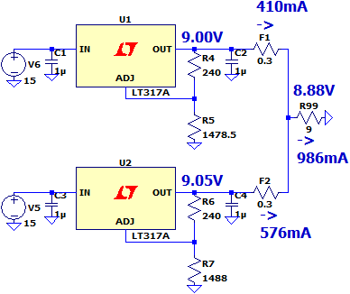
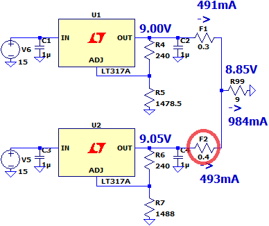

カレントダブラーケーブル 分解
2023年06月25日 カテゴリー：修理・改造・解析

マルチエフェクター等の電源を専用アダプター以外から取りたいという需要はそれなりにあるらしく、パワーサプライの2ポートの電流容量を足し合わせるカレントダブラーケーブルというものが販売されています。どういった構造になっているか気になったため、以下の3種類を購入しました。
・VOODOO LAB / PPAP Current Doubler Adapter
・CUSTOM AUDIO JAPAN / Current Doubler Cable
・GATOR / GTR-PWR-2XCURR-L6
電源を並列接続する場合、「LDOリニアレギュレータの並列接続とは」というページが参考になります。このページで紹介されているように、ケーブル内部にダイオードや抵抗器が入っている可能性を考えました。しかしデジタルマルチメータで調べてみると、VOODOO LABとCUSTOM AUDIO JAPANのものは各プラグ間の抵抗値は0.1Ω未満で、単に直結してあるだけのようでした。
GATORのものは抵抗値が0.2Ω程度あったので分解してみました。

特に部品のようなものは見つからず、直結されているようでした。抵抗値が大きめなのが意図的なのかどうかはわかりません。（通常のDCケーブルは、電圧降下が少なくなるよう抵抗値は少ない方がよいです。）
【シミュレーション】
出力を直結して本当に大丈夫なのか、シミュレーションしてみます。
通常、絶縁型パワーサプライの出力には3端子レギュレータやリセッタブルヒューズ（ポリスイッチ）が入っています。出力電圧は全ポート丁度9Vではなく、部品の誤差等で0.05V程度ズレることも充分ありえます。そして500mAのポート2個口から1000mA取り出そうとすると……

電流が偏って片方のポートは500mAを超えてしまいます。出力部の抵抗値は0.3Ωとしていますが、もっと低い場合は電流の偏りがさらに大きくなります。
リセッタブルヒューズ（ポリスイッチ）を保持電流を超えて使うと、温度上昇により抵抗値が上がることが考えられます（参考ページ→ポリスイッチ）。

こうなるとうまい具合に電流がバランスよく供給されます。ただし、実際には丁度良い抵抗値にならず電流が最大定格を超えたままになり、パワーサプライの内部トランス等にダメージを与える可能性があります。HX StompやHX Effectsのように1000mAギリギリでの運用はリスクが高いです。あくまでも余裕を持った運用（500mAのポート2個口から600mA取り出す等）をすべきだと思います。また、CUSTOM AUDIO JAPANの製品ページに150mA+500mA=650mAという例が掲載されていますが、実際にはこのような都合のよい配分にはならないのでやめておいた方がよいでしょう。
もちろん、パワーサプライの出力部が実際どのような回路になっているかわからないという不安要素もあります。VOODOO LAB Pedal Power 2 Plusの旧タイプを修理したことがあるのですが、この機種では出力それぞれにリセッタブルヒューズは入っていませんでした（現行品では入っているかも）。最大電流を超えた状態で使用すると、トランスに埋め込まれた温度ヒューズが切れてしまう可能性が高いです。同メーカーのCurrent Doubler Adapterを使ったせいで壊してしまったという人がいるかもしれないですね……